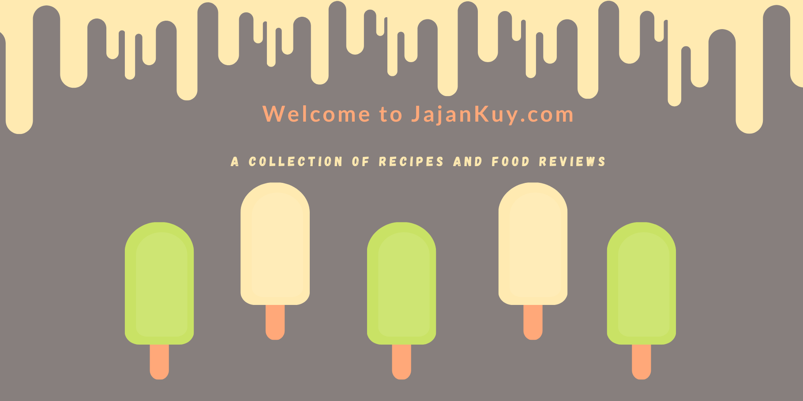

JajanKuy.com adalah website tentang seputar kuliner yang ada di Indonesia. Kuliner Indonesiamerupakan salah satu masakan terlezat di dunia dengan bumbu rempah-rempah yang begitu lengkap. Ragam masakan Indonesia pun begitu banyak dan rata-rata membuatmu menelan ludah hanya dengan melihat gambar masakannya saja.
Yuk Coba Masak!
Corndog Mozarella Cemilan Hits dari Kore
Bagi para pecinta hiburan Korea tentunya sudah mengetahui berbagai macam makanan atau jajanan negeri gingseng tersebut, salah satunya Corndog. Corndog adalah salah satu jajanan khas Korea Selatan yang mengombinasikan sosis dengan adonan tepung tebal. Sebelum digoreng, corndog juga dilapisi tepung jagung kasar. Variasi lainnya adalah corndog dilapisi kentang goreng.
Corndog sekarang banyak macamnya, tak hanya isian sosis namun juga keju mozarella. Lapisan luarnya tak hanya pakai tepung jagung kasar, bisa juga gunakan kentang, mie yang dihancurkan, dan tepung roti. Buat kalian yang penasaran ingin mencicipi rasanya, sekarang sudah banyak di Indonesia jajanan satu ini. Namun, kalian juga bisa coba membuat sendiri di rumah lho! yuk cara bikinnya dibawah ini:
Wisata kuliner di berbagai tempat jajan yang enak, sampai tempat jajan yang melegenda harus masuk agenda wajib ketika mengunjungi berbagai daerah di Indonesia. Bukan hanya lidah yang akan dimanjakan dengan ragam cita rasa, tapi mata juga akan di hipnotis dengan pemandangan indah sebagai pelengkapnya.
Tempat Jajan Bakso Unik - Viral - Fenomenal
Lokasi: Sukaluyu, Kec. Telukjambe Tim., Kabupaten Karawang, Jawa Barat 41361
Jam buka: 10.00 – 22.00
Estimasi makan : 25 ribu – 160 ribu
Tempat Jajan Dimsum Terenak
Lokasi: Jl. Supratman No.49, Cihapit, Kec. Bandung Wetan, Kota Bandung, Jawa Barat 40114
Jam buka: 16.00 – 23.00
Estimasi makan : 13 ribu - 50 ribu
Tempat Jajan berdekorasi eklektik
Lokasi: l. Ir. H. Juanda No.339, Dago, Kecamatan Coblong, Kota Bandung, Jawa Barat 40135
Jam buka: 10.00 – 21.00
Estimasi makan : 20 ribu – 180 ribu
Tempat Jajan Hits Di Subang Kota
Lokasi: Jl. Otto Iskandardinata No.38, Karanganyar, Kec. Subang, Kabupaten Subang, Jawa Barat 41211
Jam buka: 08.30 – 23.00
Estimasi makan : 28 ribu – 200 ribu
Tempat ngopi dengan view yang menarik dan menenangkan.
Lokasi: Jl. Hutan Pinus Nganjir No.5, Sukorame, Mangunan, Dlingo, Kabupaten Bantul, Daerah Istimewa Yogyakarta 55783
Jam buka: 10.00 – 22.00
Estimasi makan : 6 ribu – 18 ribu
Tempat ngopi yang nyaman
Lokasi: Ruko Mall Cikampek, Ruko A07, Kios A 117-118, Jl. Jend. Ahmad Yani No.76, Dawuan Tengah, Kec. Cikampek, Kabupaten Karawang, Jawa Barat 41373
Jam buka: 07.00 – 22.00
Estimasi makan : 15 ribu – 90 ribu
Tempat Jajanan Unik di Yogyakarta
Lokasi: Jl. Tegalturi No.52, Giwangan, Kec. Umbulharjo, Kota Yogyakarta, Daerah Istimewa Yogyakarta 55163
Jam buka: 11.00 – 21.30
Estimasi makan : 15 ribu – 25 ribu
Tempat Jajan Viral Mie Pedas Murah dan Enak
Lokasi: Ruko Pasar Bersih Galuh Mas, Sukaharja, East Telukjambe, Karawang Regency, West Java 41361
Jam buka: 12.00 – 17.00
Estimasi makan : 5 ribu – 15 ribu